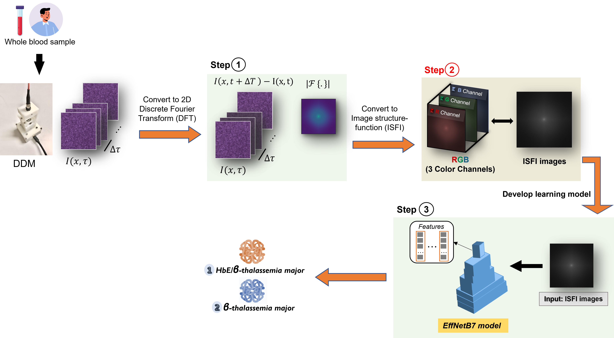
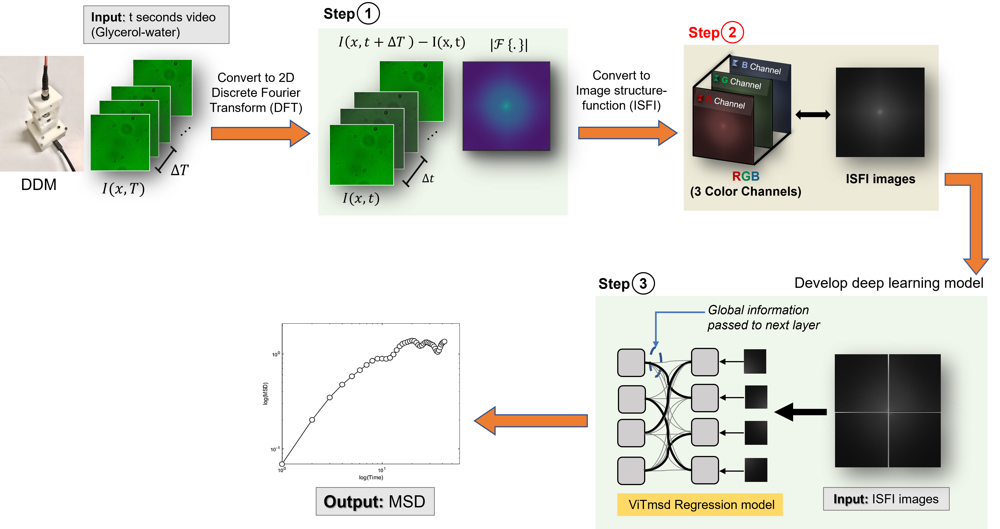

Developing Deep Learning models for Rheological
⚙️ We propose techniques for integrating image structure-function images called ISFI ⚙️
our dataset were analyzed by our portable differential dynamic microscopy-based device.

DDM device provides images about the Brownian motion of particles in the sample from the image structure function (ISFs).
To integrate image structure-function into three channels, We start by denoting the image structure-function as S(q, Δτ). defined 𝐼(𝑞, 𝜏) represents the Fourier transform of an image at wave vector q and lag time τ. With the fast Fourier transform of the difference signal ∆𝑰(𝒒, ∆𝝉) = 𝑰(𝒙, 𝝉)−𝑰(𝒙,𝟎) of the image intensity I for a specific lag time Δτ between two images is obtained using the fast Fourier transform.
To convert the image structure-function image into 3-channel color values, We calculate the structure functions S(q,Δτ) for different values of Δτ : Δτ= 0.1 s, Δτ= 0.25 s (5 frames), Δτ= 0.35 s (7 frames) to the corresponding R, G, and B values, respectively.
🔘 ThalNet: Deep Learning for Thalassemia via Blood Image Structure Function Image

Thalassemia, a genetic blood disorder, stems from faulty synthesis of α- or β-globin subunits of hemoglobin, resulting in chronic hemolytic anemia. Diagnosis via complete blood cell (CBC) can identify Thalassemia but does not pinpoint specific anemias which require further tests that are often inaccessible in smaller healthcare settings due to equipment costs. We propose ThalNet, a more accurate and automated prediction model to screen individuals with Thalassemia from healthy individuals and classification between the two β-Thalassemia subtypes. We compared ThalNet against classical machine learning models and a recent deep learning model. In screening individuals with Thalassemia from healthy individuals using the ThalNet model, we found that the ThalNet model achieved an accuracy of 0.86, 0.88 precision, 0.87 recall (sensitivity), 0.78 specificity, and 0.85 f1-score. For the subtype classification of β-Thalassemia, the ThalNet model achieved 0.67 accuracy, 0.71 precision, 0.67 recall (sensitivity), 0.67 specificity, and 0.64 f1-score. Our ThalNet model demonstrated superior performance over the ViT model in both Thalassemia screening task and the classification of β- Thalassemia subtypes task. Moreover, ThalNet outperformed the Classical approaches that utilize CBC count parameters, demonstrated its potential for clinical application in β-Thalassemia subtype classification using only a video of human whole blood sample.
🔘 Deep Learning Model for Estimating Rheological Properties of Fluids from Video

This research introduces an approach to developing deep learning models for estimating the rheological properties of fluids from video. In this work, the rheological properties focus on Mean Square Displacement (MSD), which is commonly employed to analyze fluid-particle dynamics and demonstrate the viscoelastic properties of a complex fluid. The data in this study was acquired by tracking fluid-particle dynamics by capturing the movement images of probe particles in Glycerol-water solutions across seven concentration levels using Differential Dynamic Microscopy (DDM). The images obtained from Differential Dynamic Microscopy were utilized to develop Deep Learning for Regression models to estimate Mean Square Displacement. Two distinct models are developed: ViTmsd Regression based on Transformer architecture and EffNetB7MSD Regression based on Convolution Neural Networks (ConvNets) architecture. The MSD values used for training the models were determined using the Generalized Stokes-Einstein Relation (GSER) formula, which served as the ground truth for model development and evaluation. The performance of the ViTmsd Regression model is compared with the EffNetB7MSD Regression model and DDAMSDT algorithm using 10-fold cross-validation, hypotheses were tested at a statistical significance level of 0.05, employing one-way analysis of variance (ANOVA) and the Least Significant Difference (LSD) method. The evaluation was conducted on a Glycerol-water dataset averaged at all %wt levels, with video recordings of 60 seconds. The results indicate that the DDAMSDT algorithm provides the most accurate estimates, achieving a Root Mean Squared Error (RMSE) of 4.249, which is statistically significant, and a Symmetric Mean Absolute Percentage Error (SMAPE) of 27.607%, which is not statistically significant. However, when considering the critical period, a video recording time of not more than 10 seconds is considered the key focus in rheological properties studies found that the ViTmsd Regression model yields the most accurate estimates MSD, the ViTmsd Regression model demonstrated superior accuracy with an RMSE of 0.190, which is statistically significant, and a SMAPE of 23.780%, which is not statistically significant. Therefore, the ViTmsd Regression model is the most efficient for estimating the Mean Square Displacement of a liquid at the video recording time is limited to 10 seconds.